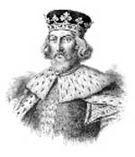

Kral John (1167-1216) hiç sevilmeyen bir İngiliz kralıydı. Halkına ağır vergiler yüklemiş, Fransa ile yapılan pek çok savaşı kaybetmişti. Papa tarafından aforoz edildi. Baskıcı politikalarından sıkılan baronlar 1215 yılında bir isyan başlatmış ve bu durum kralı Magna Carta’yı imzalamaya zorlamıştır. Magna Carta kraliyetin yetkilerini kısıtlayan bir belgedir. İngiliz ve Amerikan anayasal özgürlüklerinin temeli olarak kabul edilmektedir.
John, Kral 2. Henry (1133-1189) ve Aquitaneli Eleanor’un (1122-1204) beşinci ve en küçük oğluydu. Ağabeyi 1. Richard (1157-1199) 1189’da kral oldu. Ne var ki bir yıl sonra Haçlı Seferleri’nde çarpışmak için ülkeden ayrıldı. Richard’ın dört yıllık yokluğu boyunca ülkeyi John yönetti. Bu dönemde yaşananlar kurgusal Robin Hood öyküsüne temel oluşturmuştur. Hikayede John baş kötü karakterdir.

Richard’ın ölümünün ardından John tahta geçti. Kısa süre içerisinde Fransa ile savaşlar başladı. John, 1200’lerin başında Fransa’yla yapılan savaşları desteklemek için oluşturulan İngiliz donanmasının kurucusu olarak kabul edilmektedir. Askeri faaliyetlerin maliyetini karşılamak için baronların sırtına ağır vergi yükleri bindirdi. Aynı zamanda iş çevreleri ve İngiliz Yahudileri de bu vergilerden olumsuz etkilendiler. Tüm bunlara rağmen ülkenin Fransa’daki Normandiya dahil tüm topraklarını kaybetti. 1209 yılında Canterbury başpiskoposunu kimin seçeceği konusunda papayla anlaşamayınca aforoz edildi.
Aforoz edilmesi ve vergi politikaları pek çok İngiliz asilinin ona karşı isyan etmesine neden oldu. 1215 yılında yirmi beş asi baronla Runnymede’de bir araya geldi. Burası Londra yakınlarında bataklık bir bölgeydi. Barış karşılığında Magna Carta’yı imzalamaya zorlandı. Belge asillerin ödediği miras vergisini azaltıyordu. Kralın, karşı tarafın rızası olmadan ve tazminat ödemeksizin mülklere el koyması yasaklanıyordu. Ayrıca cezanın suça uygun olması prensibi getirildi. Özellikle habeas corpus[6] ilkesinin benimsenmesi çok önemli bir gelişmeydi.
Tarihsel önemine rağmen Magna Carta kısa vadede isyanın bitirilmesini sağlamadı. 1215’de ortam yeniden gerildi. Hoşnutsuz asiller 1. Baronlar Savaşı’nı başlattılar. Sonraki yıl kırk dokuz yaşındaki John öldü. Barışı sağlayan ise oğlu 3. Henry (1207-1272) oldu.
Ek Bilgiler
1- Kral John’un ölümünden sonra kraliyet ailesi “John” adından uzak durdu. Bu adın, tahtın hiçbir adayına verilmemesi yazılı olmayan bir kural haline geldi.
2- Magna Carta’nın on yedi adet orijinal kopyası halen mevcuttur. Bunlardan biri 2007 yılında 21.3 milyon dolara bir özel sermaye fonunun avukatına satılmıştır. Amerika’daki tek kopya ise Washington’daki Ulusal Arşiv’de sergilenmektedir.
3- John’un lakabı “Lackland”dı (Topraksız). Zira Kral 2. Henry’nin en küçük oğlu olduğu için gençken kendisine ait hiçbir toprağı yoktu.